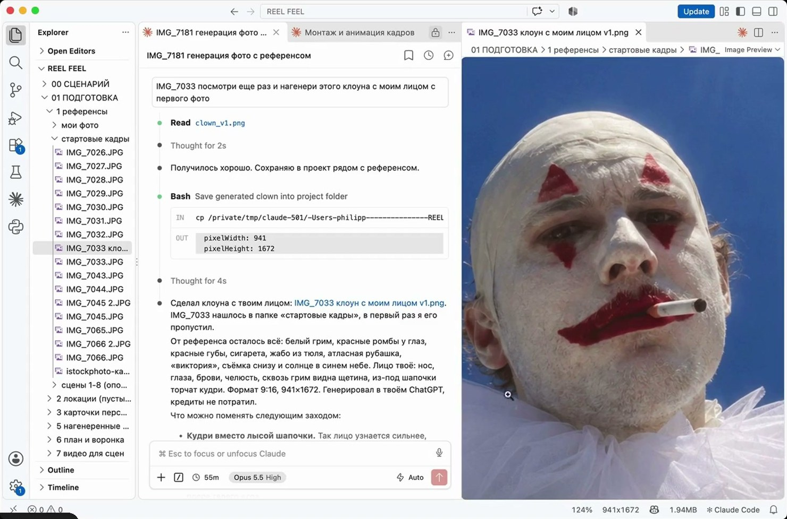
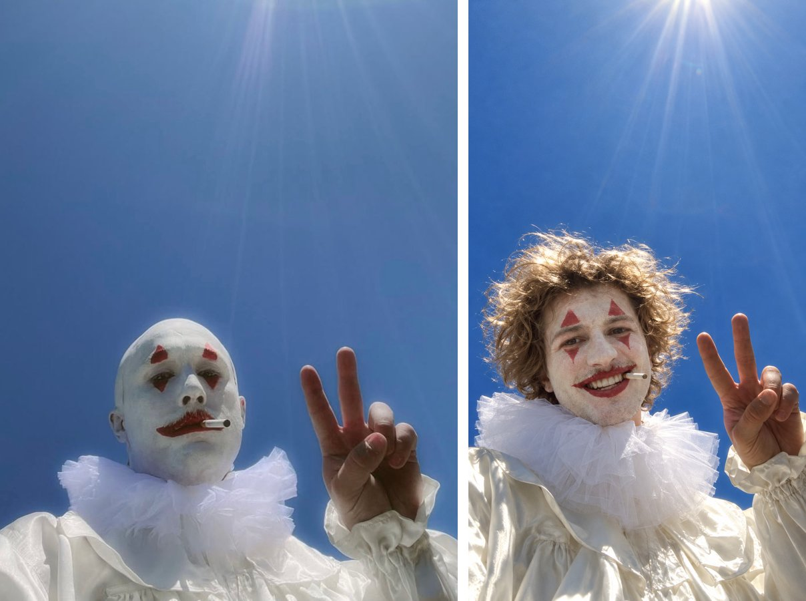
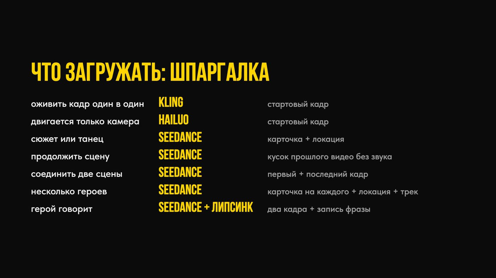

Как я делаю клипы нейросетями, не заходя ни в один интерфейс, и трачу на генерации вдвое меньше
Все 63 секунды этого клипа я сделал, не открыв ни одного сайта нейросетей. Ни одного интерфейса, ни одной кнопки «сгенерировать».
Я просто сидел и говорил словами, что хочу увидеть. Claude на моём компьютере делал всё остальное. 🤯
Привет, это Фил!
Три года я делал ИИ-контент для Элджея, Анны Асти, Фараона, Вали Карнавал и учил этому больше 500 человек на курсе Game of Creators. Так что старый способ я знаю изнутри: миллион генераций ради трёх секунд, пять открытых сайтов, дубль за дублем, а кадр всё мимо. Промпт переписываешь по десятому кругу, а нейросеть всё равно делает по-своему. Как же это задолбало.
Теперь всё делается по-другому: так, как я сделал этот клип.
Если ты сейчас там же, где был я, дальше про тебя.
Видишь крутой ИИ-клип и думаешь: почему это сделал не я? Очень хочется попробовать. Тем более в рилсах постоянно говорят, что такое делается в две кнопки и за пару минут.
Пробуешь, и начинается:
❌ 4-5 открытых вкладок. Higgsfield, Kling, Seedance где-то на дешёвом агрегаторе. Тут дешевле, там быстрее, и ты скачешь между ними.
❌ Подписки, которые горят. Половина кредитов сгорает в конце месяца, так и не пригодившись.
❌ Видео уходит от твоего референса. Закидываешь красивую картинку, получаешь мёртвое кино, как у всех. Лицо плывёт, герой каждый раз разный.
❌ Деньги уходят на пробы. Перегенерил пять раз, и ни один дубль не подошёл.
Или ты вообще не начинал, потому что кажется, что это для технарей, одарённых, чуть ли не гениев.
Это нормально. Так начинает почти каждый, и дело тут в методе. Метод можно понять и изучить.
Хотел сделать клип за один вечер. Собрал в Pinterest пять картинок, сделал образы со своим лицом, закинул всё в Seedance одним промптом и ждал кино.
Вот что получил:
За вечер ушло около 3 000 ₽, половина всех кредитов. Из всего этого в клип пошла пара секунд.
Тогда стало очевидно главное: волшебной кнопки нет.
Если хочешь делать круто, клип нужно собирать шот за шотом. Сначала карточка героя и пустая локация. Потом понимание, какая нейросеть ведёт каждую сцену. Сначала идеальные картинки, и только потом видео.
«Получается, нужно изучить десятки нейросетей?»
Их уже выучил Claude. Я научил его один раз, а ты получаешь его готовым и просто говоришь, что хочешь увидеть.
У меня на компьютере работает Claude со скиллом-режиссёром. Скилл я обучал на целом фильме ONEIRIC от Higgsfield, полностью сгенерированном нейросетями. Разобрал все его промпты и всю эволюцию промптинга, от неудачных генераций к удачным, на 40 тысячах генераций. И правил скилл, пока он не начал делать ровно то, что нужно.


Процесс такой:

Моя работа: придумать и решить, нравится мне или нет. Всю рутину забирает он.
«А вдруг я не разберусь? С компьютером я на „вы“»
Я тоже не программист. Всё ставится один раз по моему уроку, клик в клик. Дальше ты общаешься с Claude по-русски, как в мессенджере.
Весь клип по моему методу обошёлся в 88 $: 61 $ на генерации, 7,6 $ на Topaz и 20 $ ChatGPT.

На что ушло больше всего. Больше всего съел Seedance: 46 дублей. Я гонял их черновиками в 480p и поднимал качество только у удачных. Те же дубли сразу в 720p стоили бы около 94 $ вместо 46 $. И сначала картинка, видео только после «да».
А теперь Higgsfield. Я взял все генерации из этого клипа и посчитал по их прайсу. Там ты бы потратил минимум €129 в месяц, это около 150 $: такой объём генераций не влезает ни в одну подписку дешевле. Плюс ChatGPT, 20 $.
Итого: около 170 $ против 88 $.
Мой метод почти вдвое дешевле, и сам процесс проще в разы. Claude в обоих случаях сверху, 20 $ в месяц.
7 видеоуроков, около 1 часа 40 минут. В том порядке, в каком я сам прошёл путь, только без моих шишек.
1. Как я слил подписку за вечер. Главная ошибка новичка, чтобы ты не платил за неё сам.
2. Идея и сценарий. Как из картинок в Pinterest и пары мыслей собрать раскадровку вместе с Claude.
3. Какая нейросеть для чего. Карта на живых примерах из клипа: что делать в Kling, что в Seedance, где дешевле, с ценами в кредитах.

4. Готовим сцену к генерации. Семь ситуаций из клипа: что я загрузил в нейросеть и что получил. Как держать кадр в своём референсе и не получить мёртвое кино. Этот урок экономит больше всего денег.

5. Установка. Claude, скилл, ChatGPT и нейросети, шаг за шагом, клик в клик. После этого урока у тебя на компьютере свой режиссёр.
6. Как работать с режиссёром. Что ему говорить, куда он всё складывает, как поправлять брак. Показываю вживую на своём проекте.
7. Что дальше. Переходы, текст в кадре, моушн: куда расти после первого клипа.
🎬 Мой скилл-режиссёр, тот самый, на котором сделан клип. Ставится одной фразой.
🗂 Шпаргалка «Что загружать в нейросеть». Семь ситуаций из клипа: что положить на вход, чтобы кадр остался твоим.

🗂 Шпаргалка «Какая нейросеть за что отвечает». Образы, реализм, движение камеры, танец, качество, звук. Всё на одном листе, с ценами.

✅ Полностью настроенный компьютер и свой режиссёр, который генерит по твоим словам.
✅ Первые сцены твоего клипа по твоему референсу.
✅ Понимание, какую нейросеть брать под каждую сцену и сколько это стоит.
✅ Порядок: все дубли, кадры и версии по папкам, ничего не теряется.
✅ Деньги на пробы перестают улетать: сначала картинка, видео только после твоего «да».
Если ищешь кнопку «сделай красиво». Её нет: клип собирается шот за шотом, и я учу именно этому.
Если не готов вложить в генерации 20-30 $ на первый клип.
Если хочешь готовый клип под ключ. Для этого есть наставничество, о нём в конце.
Минута хорошего ролика в продакшене стоит от 500 000 ₽. У частных креаторов от 100 000 ₽ и выше. Я сам меньше чем за 100 000 ₽ клип под заказ не беру.
Свои клипы ты будешь делать почти по цене генераций. А стоимость нейросетей для заказчика считаешь по обычным сервисам. Разницу забираешь себе.
Купить гайд за 2 990 ₽Mac или Windows? Показываю на Mac. На Windows шаги те же: VS Code и Claude есть и там.
Сколько денег уйдёт кроме гайда? Подписки Claude Pro и ChatGPT Plus, по 20 $ в месяц. На первый клип закладывай 20-30 $ на генерации, кредиты не сгорают.
Как платить из России? Где-то российской картой напрямую, где-то через сервис-посредник. Оба пути показываю в уроке 5.
А если аккаунт Claude заблокируют? Клип, скилл и все материалы лежат у тебя на компьютере. Заводишь новый аккаунт и продолжаешь с того же места.
Это же ИИ-слоп одной кнопкой? Одной кнопкой как раз и выходит слоп, я проверил это на своих 3 000 ₽. Клип собирается шот за шотом: всё важное фиксирую картинками, а где нужна жизнь, даю нейросети свободу. Этому и учу.
Чем это лучше бесплатных роликов на YouTube? Я подробно показываю весь процесс от А до Я на своём живом опыте, со всеми цифрами и ошибками. И отдаю тебе скилл и всё, что нужно, чтобы ты сел и собрал свой ролик за вечер.
Сколько времени займёт? Уроки около 1 часа 40 минут. Настройка один вечер. Первые сцены своего клипа можно сделать в тот же день.
❌ Дальше пробовать самому, учиться на своих ошибках и смотреть, как горят кредиты.
❌ Пытаться собрать метод по кусочкам на YouTube, где в основном рассказывают, а весь процесс целиком не показывает никто.
✅ Взять путь, который я уже прошёл, и режиссёра, который будет работать на тебя.
2 990 ₽.
Ровно столько я слил за тот один вечер в Seedance. Только у меня на выходе было слайд-шоу из картинок, а у тебя будет свой режиссёр.
Как получить доступ: жмёшь кнопку, оплачиваешь картой или через СБП, и бот сразу открывает уроки. Чек приходит туда же.
Купить гайд за 2 990 ₽С переходами, субтитрами и моушном? Приходи на наставничество: соберём твой клип вместе, от идеи до финала.
Хочу на наставничествоP.S. Если коротко: 7 уроков, мой скилл-режиссёр и шпаргалки за 2 990 ₽. Ты говоришь словами, Claude делает клип, деньги на пробы больше не улетают.
Купить гайд за 2 990 ₽В моём Telegram-канале разборы нейросетей, закулисье клипов и все мои новые продукты. Там они появляются первыми.
Оплачивая гайд, ты принимаешь условия оферты.
Купить гайд · 2 990 ₽